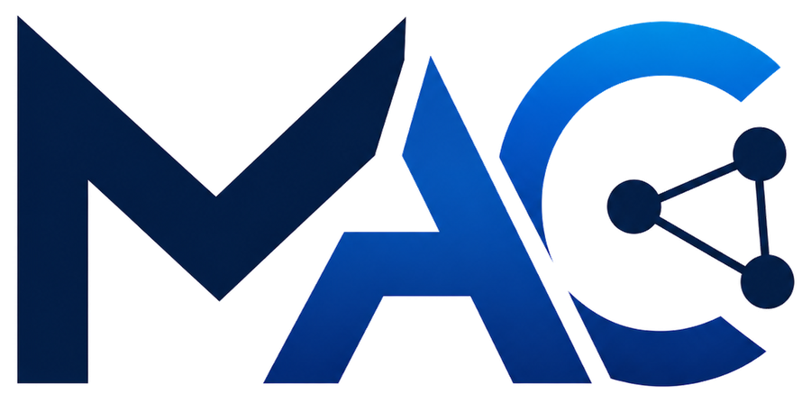

MAIWAND ALAMZOII turn satellite, sensor and climate data into decisions for AgriTech companies, water authorities and municipalities — built by someone who understands both the machinery in the field and the software behind the data.
Your team spends weeks manually reviewing satellite imagery for crop or land condition.
What I build: pipelines that turn that review into a decision in minutes.
You need to report climate risk or emissions data, but the numbers aren't traceable to a real source.
What I build: tools where every number is traceable to an official dataset.
You have field, sensor or weather data sitting unused.
What I build: a model or dashboard your team can actually act on.
You need geospatial, AI or agronomic expertise your team doesn't have in-house.
What I offer: a defined scoped project, or embedded support — remote, or on-site in the Netherlands.
Select a sector to see the relevant capabilities and the real work behind them. Where I have capability but no completed project yet, that's stated plainly — not implied as delivery.
A full-stack AI platform, designed and deployed solo, turning live Sentinel-2 satellite data into field-level NDVI, water-stress and crop analytics for Afghan smallholder farmers — with a multilingual advisory assistant answering farming questions in English, Dari and Pashto.
Built with the needs of the 500M+ smallholder farmers worldwide who currently lack this kind of digital advisory support in mind — ZaminAI is a live, publicly explorable proof of what that support could look like, not a claim of current mass adoption.
Organized around outcomes, not technology lists. Expand any item for the underlying method and a real example.
Extract and process Sentinel-2, Landsat and Sentinel-1 imagery into vegetation and water-stress indices at field level, with cloud masking and multi-source fallback.
Technology
Google Earth Engine, Sentinel-2/Landsat/Sentinel-1, NDVI/EVI/SAVI/MNDWI
Real example
ZaminAI's satellite pipeline; the Crop Stress Prediction extraction pipeline (6 years, 36 locations)
Discuss a project →Build and honestly validate ML models that flag stress risk 2–4 weeks ahead of visible symptoms, with real train/test splits and no inflated metrics.
Technology
scikit-learn, XGBoost, SHAP explainability, cross-validated evaluation
Real example
Crop Stress Prediction — F1 0.41, 72% accuracy on a genuine holdout; Agrisim & Rapagra — ~87% (commercial deployment)
Discuss a project →Build reliable pipelines that join satellite, weather, sensor and government data into clean, model-ready datasets.
Technology
Python, Pandas, Open-Meteo, PostgreSQL/Supabase, OGC WMS
Real example
ZaminAI's data backend; Circle Farming's IoT sensor pipelines
Discuss a project →Ship the full product — API, database and a live interface — not just a notebook that never leaves a laptop.
Technology
Flask, REST APIs, Streamlit, PostgreSQL, Render, Docker
Real example
ZaminAI and the Scope 1+2 Emissions Calculator — both live, public products
Discuss a project →Integrate official government risk data — often scattered across separate map services — into one explorable dashboard.
Technology
OGC WMS/GetFeatureInfo, Folium, Streamlit, QGIS, GeoPandas
Real example
Netherlands Climate Risk & Nitrogen Dashboard — 34 locations, 12 official risk layers
Discuss a project →Build calculators against official emission-factor sources, with every output number traceable back to its source row.
Technology
Python, Pandas, official Dutch CO2-Prestatieladder emission factors
Real example
Scope 1+2 Emissions Calculator — verified calculation, 3,300.5 kg CO2e checked by hand
Discuss a project →Integrate LLMs into a domain-specific advisory assistant, with a rule-based fallback so it keeps working when the API doesn't.
Technology
Claude/Gemini APIs, prompt engineering, rule-based fallback logic
Real example
ZaminAI's advisory assistant — English, Dari and Pashto
Discuss a project →Mechanization-level calculations, machinery and tractor design fundamentals, field-testing under real operating conditions.
Technology
CAD (SolidWorks, PRO/E), mechanization engineering, field-testing protocols
Real example
M.Tech, IIT Kharagpur; National Mechanization Services, Ministry of Agriculture (34 provinces)
Discuss a project →Train farm managers and professionals on technology adoption; build policy databases; coordinate multi-stakeholder programmes.
Technology
Monitoring & evaluation, project cycle management, policy analysis, technical training design
Real example
FAO (UN) national consultant; 40+ professionals trained at Precision Agriculture Campus, Noord-Brabant
Discuss a project →Real systems, real numbers — including where results fall short. No invented metrics, customers or partnerships.
A short discussion of your agricultural, geospatial, data or decision-support challenge — no obligation, no cost.
Example: a water authority wondering whether their flood-risk reporting could pull from an official WMS layer instead of a static PDF — that's a 30-minute conversation, not a proposal.
Book a 30-minute discussion →A defined analysis, model, dashboard or decision-support deliverable, with agreed scope and timeline.
Example, real: the Netherlands Climate Risk & Nitrogen Dashboard — a fixed brief (12 official risk layers, 34 locations), delivered as a working tool, not an open-ended retainer.
Discuss a project →Remote or hybrid technical support integrated with your team for longer engagements.
Example: sitting inside a data or GIS team for a set number of days a month — building, reviewing, or unblocking whatever the team is stuck on that sprint.
Get in touch →I build the full pipeline — from raw satellite and sensor data to the model, the API and the live product a client's team actually uses — as an independent consultancy, not a single-hat freelancer.
Agricultural engineer turned AI and data science consultant, with 7+ years building and deploying satellite-data, machine-learning and software systems for real production use. Founder of a KVK-registered technical consultancy (KVK 42083664, SBI 71120 & 62200) delivering applied AI and data solutions to Dutch SMEs and international clients. Built and deployed two production platforms solo.
Unusual engineering depth: an M.Tech in Farm Power & Machinery from IIT Kharagpur — mechanization-level calculations, farm machinery and tractor design, robotics, CAD, control & instrumentation (Nuffic-evaluated as equivalent to a Dutch wo master's) combined with international programme and policy experience as a former FAO (UN) national consultant, now on the FAO UN Expert Roster as a Soil Management Specialist.
Based in Leuth (Gelderland, Arnhem-Nijmegen region) and available hybrid or on-location anywhere in the Netherlands for site visits, workshops and embedded project work. Particular focus on themes with active Dutch and EU funding and policy attention: nitrogen and drought monitoring, precision agriculture, ESG & CSRD reporting, and climate adaptation. Also available fully remote for EU and international engagements.
Every pin is a real place tied to a role, degree, founding date or research site on this site — click one for details.
CROP STRESS PREDICTION — REAL 2023–2024 TEST-SET RESULTS, BY COUNTRY
Click a country to zoom the map to just its research sites.
| Country | Test rows | Real stress rate | Accuracy | F1 (stress class) |
|---|---|---|---|---|
| Afghanistan | 507 | 25.6% | 81.3% | 0.62 |
| Netherlands | 325 | 18.8% | 65.5% | 0.19 |
| New Zealand | 393 | 15.8% | 65.9% | 0.26 |
No farmer-count or yield data exists for these sites — this is satellite-derived vegetation-stress data only, 6 years (2019–2024), evaluated on a genuine holdout the model never trained on. Full methodology in the case study.
Career pins link to the relevant section above; research-site pins link to the full Crop Stress Prediction case study.
Registered independent consultancy delivering applied AI, machine-learning and data solutions to Dutch SMEs and development-sector clients.
Full-stack AI platform processing live satellite data into field-level analytics, with a multilingual advisory layer.
Free, open-access research and data platform across six development pillars; published policy briefs on water security, soil degradation and economic diversification.
ML models for crop stress/disease detection (~87% accuracy); deployed monitoring app across commercial sites.
IoT-based monitoring and real-time data workflows for controlled-environment systems.
Python data-analysis pipelines and visualisations; trained 40+ professionals; contributed to EU project proposals.
Processed and analysed large datasets to derive performance indicators.
Policy analysis, food-security assessments, national policy database; selected onto FAO UN Expert Roster.
Led national mechanization services (team of 15+) across all 34 provinces — field-tested machinery under real operating conditions and trained farm managers on machinery and technology.
Available for freelance and consultancy projects in AI, data science, geospatial analytics and agricultural engineering.
Book a free 30-minute audit maiwand@alamzoiconsultancy.com GitHub